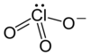

chlorate

Definition: Chlorate is the common name of the ClO−3 anion, whose chlorine atom is in the +5 oxidation state. The term can also refer to chemical compounds containing this anion, with chlorates being the salts of chloric acid. Other oxyanions of chlorine can be named "chlorate" followed by a Roman numeral in parentheses denoting the oxidation state of chlorine: e.g., the ClO−4 ion commonly called perchlorate can also be called chlorate(VII).
Source: Wikipedia
Wikipedia Page
Wikidata Page